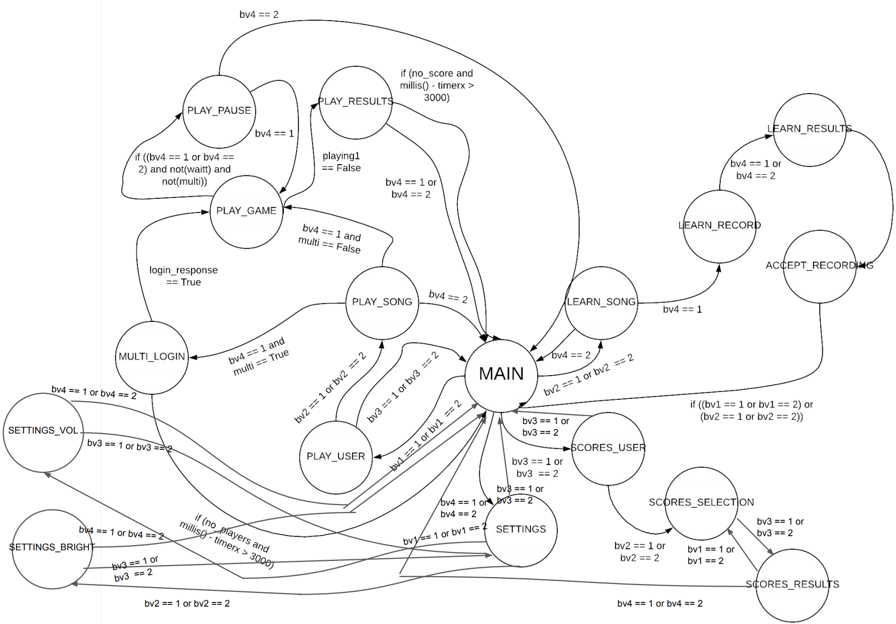
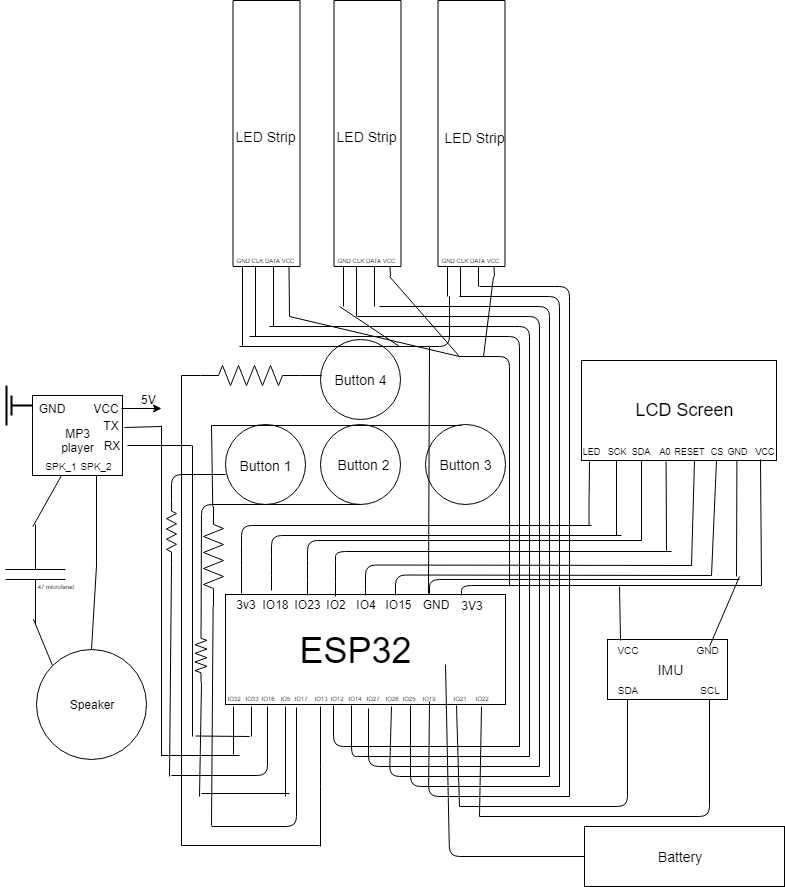

Created by Felix Tran, Luis Gonzalez, Marco Fleming, Tanner Bonner
The famous “Guitar Hero” franchise has proven to be wildly successful over the past decade. Our project, BanjoHero, plans to recreate the thrill of the game via our ESP32s and breadboards. The user will be able to choose from a variety of songs ranging from hot new singles such as Old Town Road by Lil Nas X and Throwback Tunes such as Birthday Sex by Jermih, and even MIT’s own up and coming rapper Guang Cui with his one-hit wonder That’s my Bender. The user can then choose three difficulties: easy, medium, or hard. The system will enter a game mode that will light up the LEDs according to a pre-recorded pattern that is saved in a database on a server-side script. The user must wait for the LEDs to trickle down to the end of the strip and press quickly before it disappears. When the user has friends over, they can link up and play a multiplayer version of the game in real time. Upon entering the multiplayer mode, the two systems will post onto a database and get from it until it finds another player. Once found, the two battle it out and a winner is decided after the song is over. To make it even more competitive, users fight for the top 3 spots in the leaderboards section, as once you play a match, your score is posted onto a database.
This is the state diagram showcasing all the different states we used and what inputs are required to navigate through this state machine.

This is the block diagram showcasing all the different components of our system along with connected pins.

The multiplayer functionality was carried out via two scripts of server side code written in Python which contained databases for login and score posting. The login database received posts with a username, song title, difficulty, and timestamp, which was then compared to entries of the same song and difficulty and different username within the last thirty seconds. If another user was found, the match was made. The score posting worked very similarly with the exception of an additional score attribute that provided the user the 'result' in whether or not they won.
The following code is specifically for comparing the scores between two players then returning the winning screen and the losing screen to the respective players.
import sqlite3
import datetime
multiscore_db = '__HOME__/multiscoresboy.db'
def request_handler(request):
if request['method'] == 'POST':
values = request['form']
user = values['user']
song = values['song']
difficulty = values['difficulty']
score = values['score']
percent = values['percent']
thirty_seconds_ago = datetime.datetime.now() - datetime.timedelta(seconds = 30)
conn = sqlite3.connect(multiscore_db) # connect to that database (will create if it doesn't already exist)
c = conn.cursor() # make cursor into database (allows us to execute commands)
c.execute('''CREATE TABLE IF NOT EXISTS multiscore (user text, time timestamp, song text, difficulty text, score, percent);''') # run a CREATE TABLE command
c.execute('''INSERT into multiscore VALUES (?,?,?,?,?,?);''', (user, datetime.datetime.now(), song, difficulty, score, percent))
## check if theres a corresponding score ready to evaluate who won
recent_user = c.execute(''' SELECT score FROM multiscore WHERE song = ? AND difficulty = ? AND time > ? AND user != ?;''', (song, difficulty, thirty_seconds_ago, user)).fetchone()
conn.commit() # commit commands
conn.close() # close connection to database
if recent_user is None: ## no corresponding score yet
return "Waiting on results."
else:
if ((int)(recent_user[0]) < (int)(score)): ## both scores been posted - e valuate who won
return "You won!\nYour score: " + score + "\nTheir score: " + recent_user[0]
else:
return "You lost.\nYour score: " + score + "\nTheir score: " + recent_user[0] + "\nButton 4 to main."
elif request['method'] == 'GET': ## need to handle errors
user = request['values']['user']
song = request['values']['song']
difficulty = request['values']['difficulty']
score = request['values']['score']
conn = sqlite3.connect(multiscore_db) # connect to that database (will create if it doesn't already exist)
c = conn.cursor() # make cursor into database (allows us to execute commands)
ten_seconds_ago = datetime.datetime.now() - datetime.timedelta(seconds = 10)
## same process as for the POST request except not posting a score to database
recent_user = c.execute(''' SELECT score FROM multiscore WHERE song = ? AND difficulty = ? AND time > ? AND user != ?;''', (song, difficulty, ten_seconds_ago, user)).fetchone();
conn.commit()
conn.close()
if recent_user is None:
return "Waiting on results."
else:
if ((int)(recent_user[0]) < (int)(score)):
return "You won!\nYour score: " + score + "\nTheir score: " + recent_user[0] + "\nButton 4 to main."
else:
return "You lost.\nYour score: " + score + "\nTheir score: " + recent_user[0] + "\nButton 4 to main."
else:
return "Invalid request."
The following code is specifically for matching users together who are looking to play on our multiplayer platform.
import sqlite3
import datetime
login_db = '__HOME__/loginboy.db'
def request_handler(request):
if request['method'] == 'POST':
values = request['form']
user = values['user']
song = values['song']
difficulty = values['difficulty']
thirty_seconds_ago = datetime.datetime.now() - datetime.timedelta(seconds = 30)
conn = sqlite3.connect(login_db) # connect to that database (will create if it doesn't already exist)
c = conn.cursor() # make cursor into database (allows us to execute commands)
c.execute('''CREATE TABLE IF NOT EXISTS login (user text, time timestamp, song text, difficulty text);''') # run a CREATE TABLE command
## checks for if a user is already in system that isn't you
recent_user = c.execute(''' SELECT user FROM login WHERE song = ? AND difficulty = ? AND time > ? AND user != ?;''', (song, difficulty, thirty_seconds_ago, user)).fetchone();
## logs in
c.execute('''INSERT into login VALUES (?,?,?,?);''', (user, datetime.datetime.now(), song, difficulty))
conn.commit() # commit commands
conn.close() # close connection to database
if recent_user is None: ## nobody to connect to
return "False"
else: ## sends back username
return recent_user[0]
elif request['method'] == 'GET': ## need to handle errors
user = request['values']['user']
song = request['values']['song']
difficulty = request['values']['difficulty']
conn = sqlite3.connect(login_db) # connect to that database (will create if it doesn't already exist)
c = conn.cursor() # make cursor into database (allows us to execute commands)
forty_seconds_ago = datetime.datetime.now() - datetime.timedelta(seconds = 40)
recent_user = c.execute(''' SELECT user FROM login WHERE song = ? AND difficulty = ? AND time > ? AND user != ?;''', (song, difficulty, forty_seconds_ago, user)).fetchone();
conn.commit()
conn.close()
if recent_user is None:
return "False"
else:
return recent_user[0]
Addressable LED Strip
When we first proposed this project, our concerns included syncronizing gameplay for multiplayer, creating patterns for each song, storing songs, using a speaker, etc. These proved to not be our most challenging obstacles. As we progressed with BanjoHero, we found many challenges that were far more difficult:
In order to save power, we added a feature to turn down the brightness of the LEDs and the sound of the speaker. Additionally, when the system is initially booted up, the user must press a button to start the system up; when this button is
pressed, the Wifi, speaker, and led strips are set up. Thus, if the system is accidentally powered up, The battery will not be drained.
We were able to test the calculated runtimes of the system and our system ran a bit over 2hr on a full battery. This is probably because the speaker was not providing max power throughout the duration of the trial run. The passive performance
runtime was not tested due to time concerns, but simply having the ESP32 and TFT powered will last around 6.5 hours on a full battery. On average, the user will get around 3-4 hours on a full charge.
Highest Power Drawing State
The following code manages leaderboard requests and returns a formatted leaderboard for the ESP32.
import sqlite3
score_db = '__HOME__/finalproject/score5.db'
char_to_text = {'H': 'Hard ', 'M': 'Medium', 'E': 'Easy '}
def request_handler(request):
try:
if request["method"] == "POST":
# POST request: choosing a song or posting scores
user = request["form"]["user"]
# cap username at 8 characters
userlen = len(user)
user = user[0:min(userlen, 5)]
userlen = len(user)
while userlen < 4:
user += " "
userlen+=1
user.lower()
if user == '':
user = 'BLANK'
score = request["form"]["score"]
score = int(score)
song = request["form"]["song"]
# keep the song name for error purposes
og_song_name = song
# cap song name at 8 characters
songlen = len(song)
song = song[0:min(songlen, 11)]
songlen = len(song)
while songlen < 11:
song += " "
songlen += 1
difficulty = request["form"]["difficulty"]
percent = request["form"]["percent"]
percent = float(percent)
percent *= 100
percent = int(percent)
# store song and score into a database
# connect to that database (will create if it doesn't already exist)
conn = sqlite3.connect(score_db)
c = conn.cursor() # make cursor into database (allows us to execute commands)
c.execute(
'''CREATE TABLE IF NOT EXISTS userdata (user, song, difficulty, score, percent); ''') # Username, song, score, percentage
c.execute('''INSERT into userdata VALUES (?,?,?,?,?); ''',
(user, song, difficulty, score, percent))
conn.commit() # commit commands
conn.close() # close connection to database
return
else:
# GET request: get song data
val = request["values"]["val"]
# extract from databse
# connect to that database (will create if it doesn't already exist)
conn = sqlite3.connect(score_db)
c = conn.cursor() # make cursor into database (allows us to execute commands)
if val == "alltime":
song = request["values"]["song"]
og_song_name = song
songlen = len(song)
song = song[0:min(songlen, 11)]
songlen = len(song)
while songlen < 11:
song += " "
songlen += 1
# we want to get the top three scores (if they exist) or, if no such data exists, catch the error
try:
alltimebest_hard = c.execute(
'''SELECT * FROM userdata WHERE song = ? AND difficulty = ? ORDER BY score DESC LIMIT 3;''',
(song,'H')).fetchall()
except sqlite3.OperationalError:
alltimebest_hard = []
try:
alltimebest_med = c.execute(
'''SELECT * FROM userdata WHERE song = ? AND difficulty = ? ORDER BY score DESC LIMIT 3;''',
(song,'M')).fetchall()
except sqlite3.OperationalError:
alltimebest_med = []
try:
alltimebest_easy = c.execute(
'''SELECT * FROM userdata WHERE song = ? AND difficulty = ? ORDER BY score DESC LIMIT 3;''',
(song,'E')).fetchall()
except sqlite3.OperationalError:
alltimebest_easy = []
# add the top scores into one big lists, making sure to catch errors one more time (eg
# list could be none)
bests = [alltimebest_hard, alltimebest_med, alltimebest_easy]
for i in range(len(bests)):
if bests[i] is None:
bests[i] = []
alltimebest = []
for best in bests:
alltimebest += best
if not alltimebest:
return 'no scores for\n' + og_song_name + ' yet!'
alltimebest = [alltimebest]
conn.commit() # commit commands
conn.close() # close connection to database
# this part of the code formats the leader board
newalltimebest = "Top scores for\n" + og_song_name + "\n"
newalltimebest += " User | Diff | Score | % \n"
newalltimebest +="--------------------------"
for scores in alltimebest:
for tup in scores:
for i in range(len(tup)):
data = str(tup[i])
if i % 5 == 0:
newalltimebest += "\n"
if i != 1:
if i == 3:
if len(data) < 7:
data += ' ' * (7 - len(data))
elif i == 2:
data = char_to_text[data]
elif i == 4:
data += '%'
elif len(data) < 6:
data += ' ' * (6-len(data))
newalltimebest += data
newalltimebest += "|"
newalltimebest = newalltimebest[0:-1]
newalltimebest += "\n--------------------------"
# return the alltime best without the last long line
return newalltimebest[:-27]
elif val == "personal":
# this code is the same as the alltime best leader boards
song = request["values"]["song"]
og_song_name = song
user = request["values"]["user"]
# cap username at 8 characters
userlen = len(user)
user = user[0:min(userlen, 5)]
userlen = len(user)
while userlen < 4:
user += " "
userlen += 1
songlen = len(song)
song = song[0:min(songlen, 11)]
songlen = len(song)
while songlen < 11:
song += " "
songlen += 1
# now we try to find the scores for a specific user for a particular song for all difficulties
try:
alltimebest_hard = c.execute(
'''SELECT * FROM userdata WHERE song = ? AND difficulty = ? AND user = ? ORDER BY score DESC LIMIT 3;''',
(song,'H', user)).fetchall()
except sqlite3.OperationalError:
alltimebest_hard = []
try:
alltimebest_med = c.execute(
'''SELECT * FROM userdata WHERE song = ? AND difficulty = ? AND user = ? ORDER BY score DESC LIMIT 3;''',
(song,'M', user)).fetchall()
except sqlite3.OperationalError:
alltimebest_med = []
try:
alltimebest_easy = c.execute(
'''SELECT * FROM userdata WHERE song = ? AND difficulty = ? AND user = ? ORDER BY score DESC LIMIT 3;''',
(song,'E', user)).fetchall()
except sqlite3.OperationalError:
alltimebest_easy = []
bests = [alltimebest_hard, alltimebest_med, alltimebest_easy]
for i in range(len(bests)):
if bests[i] is None:
bests[i] = []
alltimebest = []
for best in bests:
alltimebest += best
if not alltimebest:
return 'no scores for\n' + og_song_name + ' yet!'
personalbest = [alltimebest]
conn.commit() # commit commands
conn.close() # close connection to database
newpersonalbest = "Top scores for\n" + og_song_name + "\n"
newpersonalbest += " User | Diff | Score | % \n"
newpersonalbest +="--------------------------"
for scores in personalbest:
for tup in scores:
for i in range(len(tup)):
data = str(tup[i])
if i % 5 == 0:
newpersonalbest += "\n"
if i != 1:
if i == 3:
if len(data) < 7:
data += ' ' * (7 - len(data))
elif i == 2:
data = char_to_text[data]
elif i == 4:
data += '%'
elif len(data) < 6:
data += ' ' * (6-len(data))
newpersonalbest += data
newpersonalbest += "|"
newpersonalbest = newpersonalbest[0:-1]
newpersonalbest += "\n--------------------------"
return newpersonalbest[:-27]
else:
raise ValueError
except ValueError:
return "ask for sm else bruh"
except sqlite3.OperationalError:
return "no such table!"
The following code handles storage of light patterns for a given song and difficulty.
import sqlite3
import time
songs_db = '__HOME__/songs_test4.db'
def request_handler(request):
if request['method'] == 'POST':
values = request['form']
song_title = values['title']
difficulty = values['difficulty']
## corresponding sequence of 0s and 1s for the each color strip
red = values['red']
green = values['green']
blue = values['blue']
conn = sqlite3.connect(songs_db) # connect to that database (will create if it doesn't already exist)
c = conn.cursor() # make cursor into database (allows us to execute commands)
c.execute('''CREATE TABLE IF NOT EXISTS song_table2 (difficulty text, red text, green text, blue text, title text);''') # run a CREATE TABLE command
c.execute(''' SELECT * FROM song_table2 WHERE title = ? AND difficulty = ?;''', (song_title, difficulty))
data = c.fetchone()
if data is None:
c.execute('''INSERT into song_table2 VALUES (?,?,?,?,?);''', (difficulty, red, green, blue, song_title)) ## if no recorded version exists, insert
else:
c.execute('''UPDATE song_table2 SET difficulty = ?, red = ?, green = ?, blue = ?, title = ?;''',(difficulty, red, green, blue, song_title)) ## if recorded version exists, update it
conn.commit() # commit commands
conn.close() # close connection to database
elif request['method'] == 'GET': ## need to handle errors
values = request['values']
conn = sqlite3.connect(songs_db) # connect to that database (will create if it doesn't already exist)
c = conn.cursor() # make cursor into database (allows us to execute commands)
title = values['title']
difficulty = values['difficulty']
things = c.execute('''SELECT * FROM song_table2 WHERE title = (?) AND difficulty = (?);''', (title, difficulty)).fetchone()
conn.commit()
conn.close()
if (things == None): ## no data for song available
return "None"
outs = ''
for color in things[1:-1]: ## parse data with & delimiter
outs += color
outs += '&'
return outs[:-1]
The following code defines the support functions for our GET and POST requesting on the embedded side.
uint8_t char_append(char* buff, char c, uint16_t buff_size) {
int len = strlen(buff);
if (len > buff_size) return false;
buff[len] = c;
buff[len + 1] = '\0';
return true;
}
void do_http_request(char* host, char* request, char* response, uint16_t response_size, uint16_t response_timeout, uint8_t serial) {
WiFiClient client; //instantiate a client object
if (client.connect(host, 80)) { //try to connect to host on port 80
if (serial) Serial.print(request);//Can do one-line if statements in C without curly braces
client.print(request);
memset(response, 0, response_size); //Null out (0 is the value of the null terminator '\0') entire buffer
uint32_t count = millis();
while (client.connected()) { //while we remain connected read out data coming back
client.readBytesUntil('\n', response, response_size);
if (serial) Serial.println(response);
if (strcmp(response, "\r") == 0) { //found a blank line!
break;
}
memset(response, 0, response_size);
if (millis() - count > response_timeout) break;
}
memset(response, 0, response_size);
count = millis();
while (client.available()) { //read out remaining text (body of response)
char_append(response, client.read(), OUT_BUFFER_SIZE);
}
if (serial) Serial.println(response);
client.stop();
if (serial) Serial.println("-----------");
} else {
if (serial) Serial.println("connection failed :/");
if (serial) Serial.println("wait 0.5 sec...");
client.stop();
}
}
The following code contains the rest of the embedded side code.
#include <Adafruit_DotStar.h>
#include <WiFi.h> //Connect to WiFi Network
#include <SPI.h>
#include <TFT_eSPI.h>
#include <mpu9255_esp32.h>
#include <math.h>
#include <string.h>
#include <Arduino.h>
#include <DFRobotDFPlayerMini.h>
// led stuff
TFT_eSPI tft = TFT_eSPI();
#define NUMPIXELS 25
// Here's how to control the LEDs from any two pins:
#define DATAPIN1 14
#define CLOCKPIN1 12
#define DATAPIN2 26
#define CLOCKPIN2 27
#define DATAPIN3 19
#define CLOCKPIN3 25
// strtok stuff for processing song data
const char s[20] = "&";
char *token;
char *token_temp;
char debug[400];
// playing songs, speaker stuff
HardwareSerial mySoftwareSerial(2);
DFRobotDFPlayerMini myDFPlayer;
void printDetail(uint8_t type, int value);
int song_num = 0;
int volume = 10;
int brightness = 10;
const int numsongs = 7;
const char* song_list[] = {"Birthday Sex", "Old Town Road", "Shallow", "Go Your Own Way", "R U Mine", "She's American", "That's My Bender"};
int diff_num = 0; // for iterating through difficulty list below
const char* diff_list[] = {"Easy", "Medium", "Hard"};
bool playing; // for music
bool started; // for music
bool checking; // utilized if checking the remaining data for each song strip; becomes false when no data is left
bool playing1; // for actual gameplay
bool wait; // utilized for the delay in sending down the lights to end of strip before song begins
bool set_up; // for power management
bool beginning; // for power management
// light control and display variables, from light_tester.ino
Adafruit_DotStar strip(NUMPIXELS, DATAPIN1, CLOCKPIN1, DOTSTAR_RBG);
Adafruit_DotStar strip2(NUMPIXELS, DATAPIN2, CLOCKPIN2, DOTSTAR_RBG);
Adafruit_DotStar strip3(NUMPIXELS, DATAPIN3, CLOCKPIN3, DOTSTAR_RBG);
int glow_list[NUMPIXELS + 1] = {0};
int glow_list2[NUMPIXELS + 1] = {0};
int glow_list3[NUMPIXELS + 1] = {0};
// used in determining whether or not to light up each light strip
bool pressed;
bool pressed2;
bool pressed3;
// for recording
bool going = false;
// for reading, creating data
int indexer = 0;
// various purposes
uint32_t timerx;
uint32_t timer1;
uint32_t timer2;
uint32_t timer3;
uint32_t timerblob;
uint32_t timerblob2;
uint32_t timerblob3;
uint32_t last_time;
uint32_t waiting_timer;
uint32_t error_timer;
// delay for song and time between light switch, respectively
const uint32_t hang_time = 2600;
const uint32_t refresh_rate = 100;
// size 2400 needed for a 4 minute song maximum
int song_array[2400] = {0};
int song_array2[2400] = {0};
int song_array3[2400] = {0};
char song[2400];
char song2[2400];
char song3[2400];
char song_name[100];
char difficulty[50];
char user[20];
// used in determing when no data available from server for songs
bool nothing;
bool show_error;
// multiplayer functionality
bool multi;
bool login;
bool login_response;
bool no_players;
bool no_score;
int login_attempts;
bool score_response;
bool posted;
// scoring variables here
int total;
bool just_deleted = false;
bool just_deleted2 = false;
bool just_deleted3 = false;
bool blob_wait;
bool blob_wait2;
bool blob_wait3;
float score;
float percent;
bool hit;
bool miss;
int streak;
int blob_size = 0;
int blob_size2 = 0;
int blob_size3 = 0;
int blob_hold = 0;
int blob_hold2 = 0;
int blob_hold3 = 0;
char score_answer[50] = {0}; // multiplayer response post-gameplay
// leaderboard
const char* lb_criteria_arr[40] = {"alltime", "personal"};
char lb_criteria[40];
const int numcriteria = 2;
int criteria_ind;
//state machine stuff
int state; //the state of the state machine...duh
#define MAIN 0
#define PLAY_USER 1
#define PLAY_SONG 2
#define PLAY_GAME 3
#define PLAY_PAUSE 4
#define PLAY_RESULTS 5
#define LEARN_SONG 6
#define LEARN_RECORD 7
#define LEARN_PAUSE 8
#define LEARN_RESULTS 9
#define ACCEPT_RECORDING 10
#define SCORES_USER 11
#define SCORES_SELECTION 12
#define SCORES_RESULTS 13
#define MULTI_LOGIN 14
#define MULTI_RESULTS 15
#define SETTINGS 16
#define SETTINGS_VOL 17
#define SETTINGS_BRIGHT 18
//keyboard stuff
char alphabet[50] = " ABCDEFGHIJKLMNOPQRSTUVWXYZ0123456789";
char message[400] = {0}; //contains previous query response
char user_string[50] = {0};
char opponent[50] = {0};
int char_index;
unsigned long scrolling_timer;
const int scrolling_threshold = 150;
const float angle_threshold = 0.3;
// buttons
const uint8_t PIN_1 = 16; //button 1
const uint8_t PIN_2 = 5; // button 2
const uint8_t PIN_3 = 17; // button 3
const uint8_t PIN_4 = 13; // button 4
// tft screen
char output[700]; //hold message for tft
char old_output[700]; //hold old message for tft
// imu stuff
MPU9255 imu; //imu object called, appropriately, imu
// wifi stuff
char network[] = "MIT"; // your network SSID (name of wifi network)
char password[] = ""; // your network password
// server side stuff
const int RESPONSE_TIMEOUT = 6000; //ms to wait for response from host
const int GETTING_PERIOD = 60000; //periodicity of getting time from server in ms
const uint16_t IN_BUFFER_SIZE = 10000; //size of buffer to hold HTTP request
const uint16_t OUT_BUFFER_SIZE = 10000; //size of buffer to hold HTTP response
char request_buffer[IN_BUFFER_SIZE]; //char array buffer to hold HTTP request
char response[OUT_BUFFER_SIZE]; //char array buffer to hold HTTP request
char response_buffer[OUT_BUFFER_SIZE]; //char array buffer to hold HTTP response
// main functionality
void guitar_hero_sm(int bv1, int bv2, int bv3, int bv4) {
switch (state) {
case MAIN:
// idle state
sprintf(output, "Welcome to Banjo Hero!\n\nHere's how to navigate\n\n Button 1 (short): Solo\n\n Button 1 (long): Multi\n\n Button 2: Record\n\n Button 3: Leaderboards\n\n Button 4: Settings");
if (bv1 == 1) {
state = PLAY_USER;
multi = false;
// do some resetting of variables
diff_num = 0;
song_num = 0;
memset(song, 0, sizeof(song));
memset(song2, 0, sizeof(song2));
memset(song3, 0, sizeof(song3));
}
else if (bv1 == 2) {
state = PLAY_USER;
// do some resetting of variables
login = false;
multi = true; // multiplayer mode chosen
diff_num = 0;
song_num = 0;
memset(song, 0, sizeof(song));
memset(song2, 0, sizeof(song2));
memset(song3, 0, sizeof(song3));
}
if (bv2 == 1 or bv2 == 2) {
state = LEARN_SONG;
// do some resetting of variables
diff_num = 0;
song_num = 0;
}
if (bv3 == 1 or bv3 == 2) {
state = SCORES_USER;
}
if (bv4 == 1 or bv4 == 2) {
state = SETTINGS;
}
break;
case SETTINGS:
sprintf(output, "Settings\n\n Button 1: Volume \n\n Button 2: Brightness \n\n Button 3: Main Menu");
if (bv1 == 1 or bv1 == 2) {
state = SETTINGS_VOL;
}
else if (bv2 == 1 or bv2 == 2) {
state = SETTINGS_BRIGHT;
}
else if (bv3 == 1 or bv3 == 2) {
state = MAIN;
}
break;
case SETTINGS_VOL:
sprintf(output, "Volume Settings\n Button 1: Volume Up\n Button 2: Volume Down\n Button 3: Settings\n Button 4: Main Menu\n\n Current Volume: %d (0-30)", volume);
if (bv1 == 1 or bv1 == 2) { // volume control here; ensures not above 30 or below 0
if (volume < 30) { // high threshold on volume
myDFPlayer.volumeUp();
volume += 1;
playsong(0010);
}
}
else if (bv2 == 1 or bv2 == 2) {
if (volume > 0) { // low threshold on volume
myDFPlayer.volumeDown();
volume -= 1;
playsong(0010);
}
}
else if (bv3 == 1 or bv3 == 2) {
state = SETTINGS;
}
else if (bv4 == 1 or bv4 == 2) {
state = MAIN;
}
break;
case SETTINGS_BRIGHT:
sprintf(output, "Brightness Settings\n\n Button 1: Brightness Up\n\n Button 2: Brightness Down\n\n Button 3: Settings\n\n Button 4: Main Menu\n\n Brightness: %d (0-50)", brightness);
if (bv1 == 1 or bv1 == 2) {
if (brightness < 50) { // brightness settings, similar to volume in constraint mechanism
brightness += 1;
// demonstrate brightness for each strip
strip.setBrightness(brightness);
strip.fill(0x0000FF, 0, NUMPIXELS);
strip2.setBrightness(brightness);
strip2.fill(0xFF0000, 0, NUMPIXELS);
strip3.setBrightness(brightness);
strip3.fill(0x00FF00, 0, NUMPIXELS);
strip.show();
strip2.show();
strip3.show();
}
}
if (bv2 == 1 or bv2 == 2) {
if (brightness > 0) {
brightness -= 1;
// demonstrate brightness for each strip
strip.setBrightness(brightness);
strip.fill(0x0000FF, 0, NUMPIXELS);
strip2.setBrightness(brightness);
strip2.fill(0xFF0000, 0, NUMPIXELS);
strip3.setBrightness(brightness);
strip3.fill(0x00FF00, 0, NUMPIXELS);
strip.show();
strip2.show();
strip3.show();
}
}
if (bv3 == 1 or bv3 == 2) {
state = SETTINGS;
// do some resetting for LEDs back to no lights
strip.clear();
strip2.clear();
strip3.clear();
strip.show();
strip2.show();
strip3.show();
}
if (bv4 == 1 or bv4 == 2) {
state = MAIN;
// do some resetting for LEDs back to no lights
strip.clear();
strip2.clear();
strip3.clear();
strip.show();
strip2.show();
strip3.show();
}
break;
case PLAY_USER:
sprintf(output, "Enter your username.\nTap to type!\n Button 1: Accept letter\n Button 2: Done\n Button 3: Main Menu\n");
sprintf(output, "%s%s", output, message);
// have the user input their username
float x, y;
get_angle(&x, &y); //get angle values from IMU when tapping
keyboard(-y, bv1, message); // for accepting letter with button 1
if (bv2 == 1 or bv2 == 2) {
state = PLAY_SONG;
sprintf(user, "%s", user_string); // finish setting username for gameplay
}
if (bv3 == 1 or bv3 == 2) {
state = MAIN;
// do some variable resetting to clear username
memset(user, 0, strlen(user));
memset(user_string, 0, strlen(user_string));
memset(message, 0, sizeof(message));
char_index = 0;
}
break;
case PLAY_SONG:
// have the user choose a song
if (not(show_error)) {
sprintf(output, " Buttons 1 and 2\n to choose a song:\n\nSong: %s\n\n Button 3 to\n choose difficulty\n\nDifficulty: %s\n\nButton 4 (short) to begin.\nButton 4 (long) to main.", song_name, difficulty);
sprintf(difficulty, "%s", diff_list[diff_num % 3]);
sprintf(song_name, "%s", song_list[song_num]);
}
if (millis() - error_timer > 3000 and show_error) { // only show the erro "no song.." for 3 seconds
show_error = false;
}
if (bv4 == 1) { // begin gameplay
//====== initialize all variables for gameplay===== //
GET_song();
if (nothing) { // no song data, show error for 3 seconds
sprintf(output, "No song data for\n %s on %s", song_name, difficulty);
show_error = true;
error_timer = millis();
}
else { // initialize vairables for gameplay
playing1 = true;
score = 0;
total = 0;
indexer = 0;
percent = 0.0;
blob_hold = 0;
blob_hold2 = 0;
blob_hold3 = 0;
blob_size = 0;
blob_size2 = 0;
blob_size3 = 0;
wait = true;
going = true;
checking = true;
if (multi) {
state = MULTI_LOGIN;
no_players = false;
sprintf(output, "Looking for players...");
}
else {
state = PLAY_GAME;
}
//====== initialize all variables for gameplay===== //
//===calculation of total possible points - which counts the connected blobs=====//
for (int i = 0; i < strlen(song) - 1; i++) {
if (song[i] == '1' and song[i + 1] == '0') {
total += 1;
}
if (song2[i] == '1' and song2[i + 1] == '0') {
total += 1;
}
if (song3[i] == '1' and song3[i + 1] == '0') {
total += 1;
}
}
//===calculation of total possible points - which counts the connected blobs=====//
waiting_timer = millis(); // for delay in playing music by 2600 ms
}
}
if (bv4 == 2) {
state = MAIN;
// do some variable resetting to clear username
memset(user, 0, strlen(user));
memset(user_string, 0, strlen(user_string));
memset(message, 0, sizeof(message));
char_index = 0;
}
//====switch between songs here=====//
if (not(show_error)) { // dont let song switching occur in the 3 second "no song data.." display
if (bv1 == 1 or bv1 == 2) {
if (not(song_num == 0)) {
song_num -= 1;
}
}
if (bv2 == 1 or bv2 == 2) {
if (not(song_num == (numsongs - 1))) {
song_num += 1;
}
}
}
//=====switch between songs here===//
if (bv3 == 1 or bv3 == 2) { // for difficulty iteration
diff_num += 1;
}
break;
case PLAY_GAME:
if (multi) {
sprintf(output, "Currently in playing mode\n with %s for\n %s on %s\nScore: %f\n", opponent, song_name, difficulty, score);
}
else {
sprintf(output, " Currently in playing mode\n for %s on %s\n\nScore: %f\n\nButton 4 to pause.", song_name, difficulty, score);
}
// waits 2600 ms to begin playing the actual music to allow lights to fall into proper position
if (millis() - waiting_timer >= hang_time and wait) {
if (song_num == 0) {
playsong(0001); // Birthday Sex
}
else if (song_num == 1) {
playsong(0002); // Old Town Road
}
else if (song_num == 2) {
playsong(0005); // Shallow
}
else if (song_num == 3) {
playsong(0006); // Go Your Own Way
}
else if (song_num == 4) {
playsong(0007); // R U Mine 7
}
else if (song_num == 5) {
playsong(0003); // She's American
}
else if (song_num == 6) {
playsong(0011); // That's My Bender
}
wait = false; // for only starting songs once
}
// if the game is over, move onto the next state and stop the music; calculate percentage for score.
if (playing1 == false) {
if (multi) {
sprintf(output, "Checking who won..");
no_score = false; // variable reset
}
state = PLAY_RESULTS;
playpause(); // stop music
percent = (float) score / (float) total; // calculate percent
}
else if ((bv4 == 1 or bv4 == 2) and not(wait) and not (multi)) {
state = PLAY_PAUSE;
playpause(); // pause the song
}
else {
playing_song();
}
break;
case PLAY_PAUSE:
sprintf(output, "Currently paused for\n%s on %s.\n\nButton 4 (short) to resume.\nButton 4 (long) to quit.", song_name, difficulty);
if (bv4 == 1) {
state = PLAY_GAME;
playpause(); // resume the song
}
else if (bv4 == 2) {
state = MAIN;
// gameplay variable resetting
memset(song, 0, sizeof(song));
memset(song2, 0, sizeof(song2));
memset(song3, 0, sizeof(song3));
memset(song_array, 0, sizeof(song_array));
memset(song_array2, 0, sizeof(song_array2));
memset(song_array3, 0, sizeof(song_array3));
memset(glow_list, 0, sizeof(glow_list));
memset(glow_list2, 0, sizeof(glow_list2));
memset(glow_list3, 0, sizeof(glow_list3));
memset(user, 0, sizeof(user));
memset(user_string, 0, sizeof(user_string));
memset(message, 0, sizeof(message));
char_index = 0;
strip.clear();
strip2.clear();
strip3.clear();
strip.show();
strip2.show();
strip3.show();
}
break;
case PLAY_RESULTS: {
// show the score, post to database, wait for button press to go back into menu
int temp_percent = (int)(percent * 100); // round up percent to an integer
if (multi and not(posted)) { // haven't posted your score yet initially
POST_multi();
posted = true;
}
else if (multi and not(score_response)) { // if we haven't gotten a score back, keep checking
if (no_score and millis() - timerx > 3000) { // already made all of the attempts, no score was found
state = MAIN;
login_response = false;
score_response = false;
no_score = false;
no_players = false;
// do some variable resetting to clear username
memset(user, 0, strlen(user));
memset(user_string, 0, strlen(user_string));
memset(message, 0, sizeof(message));
char_index = 0;
}
else if (not(no_score)) { // attempt 9 times, once every second to check for a score
for (int i = 0; i < 10; i++) {
if (i == 9) {
sprintf(output, "Couldn't find score :(\nGoing back to main.");
timerx = millis();
no_score = true;
}
if (not(score_response)) {
POST_multi();
uint32_t timer = millis();
while (millis() - timer < 1000);
}
else {
break;
}
}
}
}
else if (multi and score_response) { // received response, display
sprintf(output, score_answer);
}
else { // solo-player response output
sprintf(output, " Score report for \n%s\n\nSong: %s\n\nDifficulty: %s\n\nScore: %f\nPercent: %d\n\n Button 4 to main", user, song_name, difficulty, score, temp_percent);
}
if (bv4 == 1 or bv4 == 2 and not(no_score)) { // going back to main
state = MAIN;
POST_score();
// variable resetting
login_response = false;
score_response = false;
no_score = false;
no_players = false;
// clear username
memset(user, 0, sizeof(user));
memset(user_string, 0, sizeof(user_string));
memset(message, 0, sizeof(message));
char_index = 0;
}
break;
}
case LEARN_SONG:
// choose the song title that you're learning for, similar to play_song
sprintf(output, " Buttons 1 and 2\n to choose a song:\n\nSong: %s\n\n Button 3 to\n choose difficulty\n\nDifficulty: %s\n\n Button 4 short to begin.\n Button 4 long to menu.", song_name, difficulty);
sprintf(difficulty, "%s", diff_list[diff_num % 3]);
sprintf(song_name, "%s", song_list[song_num]);
if (bv4 == 1) {
state = LEARN_RECORD;
going = true; // meant to track when recording
// start playing appropriate song
if (song_num == 0) {
playsong(0001); // Birthday Sex
}
else if (song_num == 1) {
playsong(0002); // Old Town Road
}
else if (song_num == 2) {
playsong(0005); // Shallow
}
else if (song_num == 3) {
playsong(0006); // Go Your Own Way
}
else if (song_num == 4) {
playsong(0007); // R U Mine?????
}
else if (song_num == 5) {
playsong(0003); // She's American
}
else if (song_num == 6) {
playsong(0011); // That's My Bender
}
}
else if (bv4 == 2) {
state = MAIN;
}
//====switch between songs here=====//
if (bv1 == 1 or bv1 == 2) {
if (not(song_num == 0)) {
song_num -= 1;
}
}
if (bv2 == 1 or bv2 == 2) {
if (not(song_num == (numsongs - 1))) {
song_num += 1;
}
}
//=====switch between songs here===//
if (bv3 == 1 or bv3 == 2) {
diff_num += 1;
}
break;
case LEARN_RECORD:
sprintf(output, "\n\n In Recording Mode for \n %s on %s. \n\nButton 4 to stop recording", song_name, difficulty);
if (bv4 == 1 or bv4 == 2) {
going = false;
playpause();
state = LEARN_RESULTS;
}
if (going) {
record_song();
}
break;
case LEARN_RESULTS:
// for the data transfer to string format (see below)
char temp[2];
char temp2[2];
char temp3[2];
//========= first need to clean up the song_arrays - check for a " 0 1 1 0 " pattern =================//
for (int i = 0; i < indexer - 4; i++) {
if (song_array[i] == 0 and song_array[i + 3] == 0) {
if (song_array[i + 1] == 1 and song_array[i + 2] == 1) {
song_array[i + 1] = 0; // this removes packets of two consecutive 1's to become only one
}
}
}
for (int i = 0; i < indexer - 4; i++) {
if (song_array2[i] == 0 and song_array2[i + 3] == 0) {
if (song_array2[i + 1] == 1 and song_array2[i + 2] == 1) {
song_array2[i + 1] = 0;
}
}
}
for (int i = 0; i < indexer - 4; i++) {
if (song_array3[i] == 0 and song_array3[i + 3] == 0) {
if (song_array3[i + 1] == 1 and song_array3[i + 2] == 1) {
song_array3[i + 1] = 0;
}
}
}
//========= first need to clean up the song_arrays - check for a " 0 1 1 0 " pattern =================//
//====== transfer the data from the song_array as recorded into a string format for the server ======//
for (int i = 0; i < indexer - 1; i++) {
sprintf(temp, "%d", song_array[i]);
sprintf(temp2, "%d", song_array2[i]);
sprintf(temp3, "%d", song_array3[i]);
strcat(song, temp);
strcat(song2, temp2);
strcat(song3, temp3);
song_array[i] = 0;
song_array2[i] = 0;
song_array3[i] = 0;
}
//====== transfer the data from the song_array as recorded into a string format for the server ======//
//====reset the light strip to be cleared====//
for (int i = 0; i < NUMPIXELS + 1; i++) {
glow_list[i] = 0;
glow_list2[i] = 0;
glow_list3[i] = 0;
strip.setPixelColor(i, 0, 0, 0);
strip2.setPixelColor(i, 0, 0, 0);
strip3.setPixelColor(i, 0, 0, 0);
}
strip.show();
strip2.show();
strip3.show();
//====reset the light strip to be cleared====//
// clear out data for next time
indexer = 0;
memset(song_array, 0, sizeof(song_array));
memset(song_array2, 0, sizeof(song_array2));
memset(song_array3, 0, sizeof(song_array3));
state = ACCEPT_RECORDING;
break;
case ACCEPT_RECORDING:
sprintf(output, "Button 1 to accept \nthe recording\n\nButton 2 to reject.");
if (bv1 == 1 or bv1 == 2) {
// accept song, send to database
POST_song();
state = MAIN;
memset(song, 0, sizeof(song));
memset(song2, 0, sizeof(song2));
memset(song3, 0, sizeof(song3));
}
else if (bv2 == 1 or bv2 == 2) {
// reject song, do not send to database
state = MAIN;
memset(song, 0, sizeof(song));
memset(song2, 0, sizeof(song2));
memset(song3, 0, sizeof(song3));
}
break;
case SCORES_USER:
sprintf(output, "Enter your username.\nTap to type!\n Button 1: Accept letter\n Button 2: Done\n Button 3: Main Menu\n");
float a, b;
get_angle(&a, &b);
keyboard(-b, bv1, message);
sprintf(output, "%s%s", output, message);
if (bv2 == 1 or bv2 == 2) { // done entering username
sprintf(user, "%s", user_string);
state = SCORES_SELECTION;
char_index = 0;
}
if (bv3 == 1 or bv3 == 2) {
state = MAIN;
// username variables reset
memset(user, 0, strlen(user));
memset(user_string, 0, strlen(user_string));
memset(message, 0, sizeof(message));
char_index = 0;
}
break;
case SCORES_SELECTION:
sprintf(song_name, "%s", song_list[song_num % numsongs]);
sprintf(lb_criteria, "%s", lb_criteria_arr[criteria_ind % numcriteria]);
sprintf(output, "Button 1 scroll songs\n\nButton 2 filters\n\nButton 3 to continue\n\nButton 4 to main menu\n\nChoose a song:\n%s\n\nFilter: %s", song_name, lb_criteria);
if (bv1 == 1 or bv1 == 2) { // iterate through songs
song_num++;
}
if (bv2 == 1 or bv1 == 2) { // iterate back and forth between criteria
criteria_ind++;
}
if (bv3 == 1 or bv3 == 2) { // look at data
GET_leaderboard();
state = SCORES_RESULTS;
}
if (bv4 == 1 or bv4 == 2) { // back to main menu
state = MAIN;
// username variable reset
memset(user, 0, strlen(user));
memset(user_string, 0, strlen(user_string));
memset(message, 0, sizeof(message));
char_index = 0;
// leaderboard variable reset
song_num = 0;
criteria_ind = 0;
}
break;
case SCORES_RESULTS:
sprintf(output, "Button 1 new criteria\nButton 2 to main menu\n\n%s", response_buffer);
if (bv1 == 1 or bv1 == 2) {
state = SCORES_SELECTION;
// leaderboard variable reset
song_num = 0;
criteria_ind = 0;
}
if (bv2 == 1 or bv2 == 2) {
state = MAIN;
// username variable reset
memset(user, 0, strlen(user));
memset(user_string, 0, strlen(user_string));
memset(message, 0, sizeof(message));
char_index = 0;
// leaderboard variable reset
song_num = 0;
criteria_ind = 0;
}
break;
case MULTI_LOGIN:
if (login_response) { // matched with someone to play with on first try with post
uint32_t timer = millis();
GET_song(); // get data to play the song
state = PLAY_GAME;
posted = false;
waiting_timer = millis(); // for the 2600 ms delay for lights coordination
}
else {
if (no_players and millis() - timerx > 3000) { // displayed the "no players found" for three seconds, back to main
state = MAIN;
}
else if (no_players) { // couldn't find anyone after the attempts
sprintf(output, "No players found.\nGoing back to main.");
}
else {
for (int i = 1; i < 12; i++) { // try to find someone 10 times, once every 3 seconds
if (i == 11) { // nobody was found
no_players = true;
timerx = millis(); // for displaying for 3 second 'no players'
// username variable reset
memset(user, 0, strlen(user));
memset(user_string, 0, strlen(user_string));
memset(message, 0, sizeof(message));
char_index = 0;
break;
}
if (login_response) { // matched with someone!
state = PLAY_GAME;
waiting_timer = millis();
break;
}
else { // keep checking if no response every 3 seconds
POST_login();
uint32_t timer = millis();
while (millis() - timer < 3000);
}
}
}
}
break;
}
}
// helper functions
//used to get x,y values from IMU accelerometer!
void get_angle(float* x, float* y) {
imu.readAccelData(imu.accelCount);
*x = imu.accelCount[0] * imu.aRes;
*y = imu.accelCount[1] * imu.aRes;
}
//our implementation of a keyboard
void keyboard(float angle, int button, char* output) {
char new_letter[2] = {alphabet[char_index], 0};
sprintf(message, "%s%s", user_string, new_letter);
if (button == 1) {
strcat(user_string, new_letter);
sprintf(message, "%s", user_string);
char_index = 0;
}
else if (millis() - scrolling_timer >= scrolling_threshold) {
if (angle >= angle_threshold) {
char_index ++;
if (char_index > 36) {
char_index = 0;
}
scrolling_timer = millis();
}
else if (angle <= -angle_threshold) {
char_index--;
if (char_index < 0) {
char_index = 36;
}
scrolling_timer = millis();
}
}
}
// helper functions for playing game
void playing_song() {
if (millis() - last_time >= refresh_rate) {
// ==========timers to check for considerations in the scoring================ //
if (millis() - timer1 > 400 and just_deleted) { // this is the functionality to only delete potential lights after 400ms instead of 100ms for better gameplay
just_deleted = false;
}
if (millis() - timer2 > 400 and just_deleted2) {
just_deleted2 = false;
}
if (millis() - timer3 > 400 and just_deleted3) {
just_deleted3 = false;
}
if (millis() - timerblob > 200 and blob_wait) { // this allows the user to hold onto a blob a little longer without penalty
blob_wait = false;
}
if (millis() - timerblob2 > 200 and blob_wait2) {
blob_wait2 = false;
}
if (millis() - timerblob3 > 200 and blob_wait3) {
blob_wait3 = false;
}
// ==========timers to check for considerations in the scoring================ //
// =========given considerations, determine score change for strip 1======================//
if (glow_list[0] == 0 and blob_size > 0) { // end of the blob
blob_size += 1; // need to add one to total blob size to fix
blob_wait = true; // want to give 200 ms for letting go
timerblob = millis();
score += (float)blob_hold / (float)blob_size; // score is a fraction of how many held over the size
blob_size = 0;
blob_hold = 0;
}
else if (glow_list[0] == 1) {
if (not(digitalRead(PIN_1)) and glow_list[1] == 0) {
if (blob_size == 0) {
// score earned for a single
score += 1;
}
}
else if (not(digitalRead(PIN_1))) {
// adding in score towards holding the blob
blob_hold += 1;
blob_size += 1;
}
else if (glow_list[1] != 0) {
// missed a part of a blob
blob_size += 1;
}
}
else if (not(digitalRead(PIN_1))) {
if (just_deleted == false and blob_wait == false) {// improper detected with considerations
for (int i = 1; i < NUMPIXELS + 1; i++) {
if (glow_list[i] == 1) { // getting rid of the lights - find the closest one to the bottom of strip
glow_list[i] = 0; // make light disappear
just_deleted = true; // for easier gameplay (see above)
timer1 = millis(); // for easier gameplay (see above)
for (int x = i + 1; x < NUMPIXELS + 1; x++) { // getting rid of lights - get rid of connected blob ^ once found the closet to bottom of strip
if (glow_list[x] == 0) {
break; // blob is done
}
else {
glow_list[x] = 0; // make light disappear
}
}
break;
}
}
}
}
// =========given considerations, determine score change for strip 1======================//
// =========given considerations, determine score change for strip 2======================//
if (glow_list2[0] == 0 and blob_size2 > 0) { // end of the blob
blob_size2 += 1; // need to add one to total blob size to fix
blob_wait2 = true; // want to give 200 ms for letting go
timerblob2 = millis();
score += (float)blob_hold2 / (float)blob_size2; // score is a fraction of how many held over the size
blob_size2 = 0;
blob_hold2 = 0;
}
else if (glow_list2[0] == 1) {
if (not(digitalRead(PIN_2)) and glow_list2[1] == 0) {
if (blob_size2 == 0) {
// score earned for a single
score += 1;
}
}
else if (not(digitalRead(PIN_2))) {
// adding in score towards holding the blob
blob_hold2 += 1;
blob_size2 += 1;
}
else if (glow_list2[1] != 0) {
// missed a part of a blob
blob_size2 += 1;
}
}
else if (not(digitalRead(PIN_2))) {
if (just_deleted2 == false and blob_wait2 == false) {// improper detected with considerations
for (int i = 1; i < NUMPIXELS + 1; i++) {
if (glow_list2[i] == 1) {
glow_list2[i] = 0;
just_deleted2 = true;
timer2 = millis();
for (int x = i + 1; x < NUMPIXELS + 1; x++) {
if (glow_list2[x] == 0) {
break;
}
else {
glow_list2[x] = 0;
}
}
break;
}
}
}
}
// =========given considerations, determine score change for strip 2======================//
// =========given considerations, determine score change for strip 3======================//
if (glow_list3[0] == 0 and blob_size3 > 0) { // end of the blob
blob_size3 += 1; // need to add one to total blob size to fix
blob_wait3 = true; // want to give 200 ms for letting go
timerblob3 = millis();
score += (float)blob_hold3 / (float)blob_size3; // score is a fraction of how many held over the size
blob_size3 = 0;
blob_hold3 = 0;
}
else if (glow_list3[0] == 1) {
if (not(digitalRead(PIN_3)) and glow_list3[1] == 0) {
if (blob_size3 == 0) {
// score earned for a single
score += 1;
}
}
else if (not(digitalRead(PIN_3))) {
// adding in score towards holding the blob
blob_hold3 += 1;
blob_size3 += 1;
}
else if (glow_list3[1] != 0) {
// missed a part of a blob
blob_size3 += 1;
}
}
else if (not(digitalRead(PIN_3))) {
if (just_deleted3 == false and blob_wait3 == false) {// improper detected with considerations
for (int i = 1; i < NUMPIXELS + 1; i++) {
if (glow_list3[i] == 1) {
glow_list3[i] = 0;
just_deleted3 = true;
timer3 = millis();
for (int x = i + 1; x < NUMPIXELS + 1; x++) {
if (glow_list3[x] == 0) {
break;
}
else {
glow_list3[x] = 0;
}
}
break;
}
}
}
}
// =========given considerations, determine score change for strip 3======================//
// =======shift down the lights for the next time frame=========== //
glow_list[0] = 0;
glow_list2[0] = 0;
glow_list3[0] = 0;
for (int i = 0; i < NUMPIXELS; i++) {
glow_list[i] = glow_list[i + 1];
glow_list2[i] = glow_list2[i + 1];
glow_list3[i] = glow_list3[i + 1];
}
// =======shift down the lights for the next time frame=========== //
// ======if still have more values in song arrays to check, then do so to light up end of strip============//
if (checking) {
if (song[indexer] == '1') {
pressed = true; // **note: "pressed" doesn't necessarily mean pressed in GAMEPLAY (it does in recording), but we kept the same variables from
// recording mode to assert lighting up the top. here, its looking for a 1 in the data grabbed from the server, not a button press like in recording.
}
else {
pressed = false;
}
if (song2[indexer] == '1') {
pressed2 = true;
}
else {
pressed2 = false;
}
if (song3[indexer] == '1') {
pressed3 = true;
}
else {
pressed3 = false;
}
if (pressed) {
glow_list[NUMPIXELS] = 1;
}
else {
glow_list[NUMPIXELS] = 0;
}
if (pressed2) {
glow_list2[NUMPIXELS] = 1;
}
else {
glow_list2[NUMPIXELS] = 0;
}
if (pressed3) {
glow_list3[NUMPIXELS] = 1;
}
else {
glow_list3[NUMPIXELS] = 0;
}
}
else {
glow_list[NUMPIXELS] = 0;
glow_list2[NUMPIXELS] = 0;
glow_list3[NUMPIXELS] = 0;
}
// ======if still have more values in song arrays to check, then do so to light up end of strip============//
//========using new values in the strip list, light up as necessary for each strip=======================//
if (glow_list[0] == 1) { // light up end of strip with corresponding color if its reached the bottom
strip.setPixelColor(0, 255, 0, 0);
}
else {
if (difficulty[0] == 'E') { // set the end of the strip to a color corresponding to difficulty
strip.setPixelColor(0, 255, 128, 0);
}
else if (difficulty[0] == 'M') {
strip.setPixelColor(0, 0, 204, 102);
}
else if (difficulty[0] == 'H') {
strip.setPixelColor(0, 102, 0, 204);
}
}
if (glow_list2[0] == 1) {
strip2.setPixelColor(0, 0, 255, 0);
}
else {
if (difficulty[0] == 'E') {
strip2.setPixelColor(0, 255, 128, 0);
}
else if (difficulty[0] == 'M') {
strip2.setPixelColor(0, 0, 204, 102);
}
else if (difficulty[0] == 'H') {
strip2.setPixelColor(0, 102, 0, 204);
}
}
if (glow_list3[0] == 1) {
strip3.setPixelColor(0, 0, 0, 255);
}
else {
if (difficulty[0] == 'E') {
strip3.setPixelColor(0, 255, 128, 0);
}
else if (difficulty[0] == 'M') {
strip3.setPixelColor(0, 0, 204, 102);
}
else if (difficulty[0] == 'H') {
strip3.setPixelColor(0, 102, 0, 204);
}
}
for (int i = 1; i < NUMPIXELS; i++) {
if (glow_list[i] == 1) {
strip.setPixelColor(i, 255, 0, 0);
}
else {
strip.setPixelColor(i, 0);
}
if (glow_list2[i] == 1) {
strip2.setPixelColor(i, 0, 255, 0);
}
else {
strip2.setPixelColor(i, 0);
}
if (glow_list3[i] == 1) {
strip3.setPixelColor(i, 0, 0, 255);
}
else {
strip3.setPixelColor(i, 0);
}
}
strip.show();
strip2.show();
strip3.show();
//========using new values in the strip list, light up as necessary for each strip=======================//
last_time = millis(); // Refresh strip
indexer = indexer + 1; // update indexer to check values of song array
if (indexer == strlen(song)) { // if the song has no more data left, stop looking //
checking = false;
}
else if (indexer == strlen(song) + NUMPIXELS) { // if its been 25 time frames since last data, stop the system - game over - all data has reached bottom of strip by now
playing1 = false;
memset(glow_list, 0, sizeof(glow_list));
memset(glow_list2, 0, sizeof(glow_list2));
memset(glow_list3, 0, sizeof(glow_list3));
memset(song, 0, sizeof(song));
memset(song2, 0, sizeof(song2));
memset(song3, 0, sizeof(song3));
indexer = 0;
strip.clear();
strip2.clear();
strip3.clear();
strip.show();
strip2.show();
strip3.show();
}
}
}
//speaker stuff helper functions
void playsong(int song) {
Serial.println(F("myDFPlayer.play(1)"));
myDFPlayer.play(song); //Play the first mp3
started = true;
playing = true;
}
void playpause() {
if (playing) {
Serial.println(F("myDFPlayer.pause()"));
myDFPlayer.pause(); //pause the mp3
playing = false;
}
else {
Serial.println(F("myDFPlayer.start()"));
myDFPlayer.start(); //start the mp3 from the pause
playing = true;
}
}
void volumeup() {
myDFPlayer.volumeUp(); //Volume Up
}
void volumedown() {
myDFPlayer.volumeDown(); //Volume Down
}
void next() {
started = true;
playing = true;
Serial.println(F("myDFPlayer.next()"));
myDFPlayer.next(); //Play next mp3
}
void prev() {
started = true;
playing = true;
Serial.println(F("myDFPlayer.previous()"));
myDFPlayer.previous(); //Play previous mp3
}
void record_song() { // note the similarities to the playing_song in terms of the light display. it's essentially the same function just without the scoring and with
// lighting the top light on the basis of a button press instead of reading a 1. also, the data is created in the song_arrays.
if (millis() - last_time >= refresh_rate) {
if (not(digitalRead(PIN_1))) {
pressed = true;
}
else {
pressed = false;
}
if (not(digitalRead(PIN_2))) {
pressed2 = true;
}
else {
pressed2 = false;
}
if (not(digitalRead(PIN_3))) {
pressed3 = true;
}
else {
pressed3 = false;
}
glow_list[0] = 0;
glow_list2[0] = 0;
glow_list3[0] = 0;
for (int i = 0; i < NUMPIXELS; i++) {
glow_list[i] = glow_list[i + 1];
glow_list2[i] = glow_list2[i + 1];
glow_list3[i] = glow_list3[i + 1];
}
if (pressed) {
song_array[indexer] = 1; // here, put a 1 in the song array (for data sending up to server) if button pressed
glow_list[NUMPIXELS] = 1;
}
else {
song_array[indexer] = 0; // here, put a 0 in the song array (for data sending up to server) if button not pressed
glow_list[NUMPIXELS] = 0;
}
if (pressed2) {
song_array2[indexer] = 1;
glow_list2[NUMPIXELS] = 1;
}
else {
song_array2[indexer] = 0;
glow_list2[NUMPIXELS] = 0;
}
if (pressed3) {
song_array3[indexer] = 1;
glow_list3[NUMPIXELS] = 1;
}
else {
song_array3[indexer] = 0;
glow_list3[NUMPIXELS] = 0;
}
for (int i = 0; i < NUMPIXELS; i++) {
if (glow_list[i] == 1) {
strip.setPixelColor(i, 255, 0, 0);
}
else {
strip.setPixelColor(i, 0);
}
if (glow_list2[i] == 1) {
strip2.setPixelColor(i, 0, 255, 0);
}
else {
strip2.setPixelColor(i, 0);
}
if (glow_list3[i] == 1) {
strip3.setPixelColor(i, 0, 0, 255);
}
else {
strip3.setPixelColor(i, 0);
}
}
strip.show();
strip2.show();
strip3.show();
last_time = millis(); // Refresh strip
indexer = indexer + 1;
}
}
// Button class for traversing state machine
class Button {
public:
uint32_t t_of_state_2;
uint32_t t_of_button_change;
uint32_t debounce_time;
uint32_t long_press_time;
uint8_t pin;
uint8_t flag;
bool button_pressed;
uint8_t state; // This is public for the sake of convenience
Button(int p) {
flag = 0;
state = 0;
pin = p;
t_of_state_2 = millis(); //init
t_of_button_change = millis(); //init
debounce_time = 10;
long_press_time = 1000;
button_pressed = 0;
}
void read() {
uint8_t button_state = digitalRead(pin);
button_pressed = !button_state;
}
int update() {
read();
flag = 0;
if (state == 0) {
if (button_pressed) {
t_of_button_change = millis();
state = 1;
}
}
else if (state == 1) {
if (button_pressed and millis() - t_of_button_change >= debounce_time) {
state = 2;
t_of_state_2 = millis();
}
else if (!button_pressed) {
state = 0;
t_of_button_change = millis();
}
} else if (state == 2) {
if (button_pressed and millis() - t_of_state_2 >= long_press_time) {
state = 3;
}
else if (!button_pressed) {
state = 4;
t_of_button_change = millis();
}
} else if (state == 3) {
if (!button_pressed) {
state = 4;
t_of_button_change = millis();
}
} else if (state == 4) {
// CODE HERE
if (button_pressed and millis() - t_of_state_2 >= long_press_time) {
state = 3;
t_of_button_change = millis();
}
else if (button_pressed and millis() - t_of_state_2 < long_press_time) {
state = 2;
t_of_button_change = millis();
}
else if (!button_pressed and millis() - t_of_button_change >= debounce_time) {
if (millis() - t_of_state_2 >= long_press_time) {
flag = 2;
}
else {
flag = 1;
}
state = 0;
}
}
return flag;
}
};
Button button1(PIN_1); //button object!
Button button2(PIN_2); //button object!
Button button3(PIN_3); //button object!
Button button4(PIN_4); //button object!
void setup() {
delay(3000); // 3 second delay for recovery
// variable initalization - power management
started = false;
set_up = false;
beginning = true;
song_num = 0;
pinMode(PIN_4, INPUT_PULLUP); // only care about pin 4 for now
tft.init(); //init screen (and nothing else yet!)
tft.setRotation(3); //adjust rotation
tft.setTextSize(1); //default font size
tft.fillScreen(TFT_BLACK); //fill background
tft.setTextColor(TFT_WHITE, TFT_BLACK); //set color for font
}
void loop() {
if (not(set_up)) { // only check for one button before setup begins
int bv4 = button4.update();
sprintf(output, "Press Button 4 to start.");
if (bv4 == 1 or bv4 == 2) {
set_up = true;
tft.fillScreen(TFT_BLUE);
tft.setCursor(0, 0, 1);
tft.println("Configuring system!");
}
}
if (set_up and beginning) { // to only run once, hence utilization of 'beginning' variable
beginning = false;
//===================== SET UP MP3 PLAYER=================================================//
mySoftwareSerial.begin(9600, SERIAL_8N1, 32, 33); // speed, type, RX, TX
Serial.begin(115200); //for debugging if needed.
Serial.println(F("DFRobot DFPlayer Mini Demo"));
Serial.println(F("Initializing DFPlayer ... (May take 3~5 seconds)"));
delay(1000);
if (!myDFPlayer.begin(mySoftwareSerial)) { //Use softwareSerial to communicate with mp3.
Serial.println(myDFPlayer.readType(), HEX);
Serial.println(F("Unable to begin:"));
Serial.println(F("1.Please recheck the connection!"));
Serial.println(F("2.Please insert the SD card!"));
while (true);
}
Serial.println(F("DFPlayer Mini online."));
myDFPlayer.setTimeOut(500); //Set serial communictaion time out 500ms
//----Set volume----
myDFPlayer.volume(volume); //Set volume value (0~30).
myDFPlayer.volumeUp(); //Volume Up
myDFPlayer.volumeDown(); //Volume Down
//----Set different EQ----
myDFPlayer.EQ(DFPLAYER_EQ_NORMAL);
//----Set device we use SD as default----
myDFPlayer.outputDevice(DFPLAYER_DEVICE_SD);
int delayms = 100;
//===================== SET UP MP3 PLAYER=================================================//
//======================SET UP THE WIFI===================================================//
WiFi.begin(network, password); //attempt to connect to wifi
uint8_t count = 0; //count used for Wifi check times
Serial.print("Attempting to connect to ");
Serial.println(network);
while (WiFi.status() != WL_CONNECTED && count < 12) {
delay(500);
Serial.print(".");
count++;
}
delay(2000);
if (WiFi.isConnected()) { //if we connected then print our IP, Mac, and SSID we're on
Serial.println("CONNECTED!");
Serial.println(WiFi.localIP().toString() + " (" + WiFi.macAddress() + ") (" + WiFi.SSID() + ")");
delay(500);
} else { //if we failed to connect just Try again.
Serial.println("Failed to Connect :/ Going to restart");
Serial.println(WiFi.status());
ESP.restart(); // restart the ESP (proper way)
}
//======================SET UP THE WIFI===================================================//
//======================SET UP THE IMU===================================================//
if (imu.setupIMU(1)) {
Serial.println("IMU Connected!");
} else {
Serial.println("IMU Not Connected :/");
Serial.println("Restarting");
ESP.restart(); // restart the ESP (proper way)
}
//======================SET UP THE IMU===================================================//
//====================SET UP THE BUTTONS=================================================//
pinMode(PIN_1, INPUT_PULLUP);
pinMode(PIN_2, INPUT_PULLUP);
pinMode(PIN_3, INPUT_PULLUP);
//====================SET UP THE BUTTONS=================================================//
//====================SET UP THE LIGHTS==================================================//
#if defined(__AVR_ATtiny85__) && (F_CPU == 16000000L)
clock_prescale_set(clock_div_1); // Enable 16 MHz on Trinket
#endif
strip.setBrightness(brightness);
strip2.setBrightness(brightness);
strip3.setBrightness(brightness);
strip.begin(); // Initialize pins for output
strip.clear();
strip.show(); // Turn all LEDs off ASAP
strip2.begin(); // Initialize pins for output
strip2.clear();
strip2.show(); // Turn all LEDs off ASAP
strip3.begin(); // Initialize pins for output
strip3.clear();
strip3.show(); // Turn all LEDs off ASAP
last_time = millis();
delay(100);
//====================SET UP THE LIGHTS==================================================//
}
// have already setup the game
if (set_up) {
int bv1 = button1.update(); //get button value
int bv2 = button2.update(); //get button value
int bv3 = button3.update(); //get button value
int bv4 = button4.update();
guitar_hero_sm(bv1, bv2, bv3, bv4); // call the state machine with bval
}
if (strcmp(output, old_output) != 0) {//only draw if changed!
tft.fillScreen(TFT_BLACK);
tft.setCursor(0, 0, 1);
tft.println(output);
}
memset(old_output, 0, sizeof(old_output));
strcat(old_output, output);
}
void parser() { // used to parse the data for the songs, which have data for all three strips separated by a & delimiter (see guitar2.py)
int counter = 0;
/* get the first token */
token = strtok(response_buffer, s);
/* walk through other tokens */
char* temp;
while ( token != NULL ) {
temp = token;
if (counter == 0) {
strcpy(song2, temp);
}
if (counter == 1) {
strcpy(song3, temp);
}
if (counter == 2) {
strcpy(song, temp);
}
token = strtok(NULL, s);
counter++;
}
}
void POST_score() { // post your score to database
char body[2000]; //for body;
char temp_diff[3];
int temp_score = (int)score; // round score up to an integer
if (difficulty[0] == 'E') {
temp_diff[0] = 'E';
}
else if (difficulty[0] == 'M') {
temp_diff[0] = 'M';
}
else {
temp_diff[0] = 'H';
}
sprintf(body, "user=%s&score=%d&song=%s&percent=%f&difficulty=%c", user, temp_score, song_name, percent, temp_diff[0]);
int body_len = strlen(body); //calculate body length (for header reporting)
sprintf(request_buffer, "POST http://608dev.net/sandbox/sc/marcof/finalproject/GuitarHeroServer.py HTTP/1.1\r\n");
strcat(request_buffer, "Host: 608dev.net\r\n");
strcat(request_buffer, "Content-Type: application/x-www-form-urlencoded\r\n");
sprintf(request_buffer + strlen(request_buffer), "Content-Length: %d\r\n", body_len); //append string formatted to end of request buffer
strcat(request_buffer, "\r\n"); //new line from header to body
strcat(request_buffer, body); //body
strcat(request_buffer, "\r\n"); //header
do_http_request("608dev.net", request_buffer, response_buffer, OUT_BUFFER_SIZE, RESPONSE_TIMEOUT, true);
}
void POST_song() { // post the data for the song's light strips here
char body[5000]; //for body;
sprintf(body, "red=%s&green=%s&blue=%s&title=%s&difficulty=%s", song2, song3, song, song_name, difficulty);
int body_len = strlen(body); //calculate body length (for header reporting)
sprintf(request_buffer, "POST http://608dev.net/sandbox/sc/tbonner/guitar2.py HTTP/1.1\r\n");
strcat(request_buffer, "Host: 608dev.net\r\n");
strcat(request_buffer, "Content-Type: application/x-www-form-urlencoded\r\n");
sprintf(request_buffer + strlen(request_buffer), "Content-Length: %d\r\n", body_len); //append string formatted to end of request buffer
strcat(request_buffer, "\r\n"); //new line from header to body
strcat(request_buffer, body); //body
strcat(request_buffer, "\r\n"); //header
do_http_request("608dev.net", request_buffer, response_buffer, OUT_BUFFER_SIZE, RESPONSE_TIMEOUT, true);
}
void GET_song() { // get song data
//val==alltime
//val==personal.......song,user
//val==song..........song
sprintf(request_buffer, "GET http://608dev.net/sandbox/sc/tbonner/guitar2.py?title=%s&difficulty=%s HTTP/1.1\r\n", song_name, difficulty);
strcat(request_buffer, "Host: 608dev.net\r\n");
strcat(request_buffer, "\r\n");
do_http_request("608dev.net", request_buffer, response_buffer, OUT_BUFFER_SIZE, RESPONSE_TIMEOUT, true);
if (response_buffer[0] == 'N') { // no data detected (server returns "None" in response_buffer)
nothing = true; // for showing the error on the screen ("No song data for...")
}
else {
parser(); // we got data, so parse it to play
nothing = false;
}
}
void GET_leaderboard() { // getting scores from leaderboard
//val==alltime
//val==personal.......song,user
//val==song..........song
sprintf(request_buffer, "GET http://608dev.net/sandbox/sc/marcof/finalproject/GuitarHeroServer.py?val=%s&user=%s&song=%s HTTP/1.1\r\n", lb_criteria, user, song_name);
strcat(request_buffer, "Host: 608dev.net\r\n");
strcat(request_buffer, "\r\n");
do_http_request("608dev.net", request_buffer, response_buffer, OUT_BUFFER_SIZE, RESPONSE_TIMEOUT, true);
}
void POST_login() { // checking for another play nearby
char body[1000]; //for body;
sprintf(body, "user=%s&song=%s&difficulty=%s", user, song_name, difficulty);
int body_len = strlen(body); //calculate body length (for header reporting)
sprintf(request_buffer, "POST http://608dev.net/sandbox/sc/tbonner/login.py HTTP/1.1\r\n");
strcat(request_buffer, "Host: 608dev.net\r\n");
strcat(request_buffer, "Content-Type: application/x-www-form-urlencoded\r\n");
sprintf(request_buffer + strlen(request_buffer), "Content-Length: %d\r\n", body_len); //append string formatted to end of request buffer
strcat(request_buffer, "\r\n"); //new line from header to body
strcat(request_buffer, body); //body
strcat(request_buffer, "\r\n"); //header
do_http_request("608dev.net", request_buffer, response_buffer, OUT_BUFFER_SIZE, RESPONSE_TIMEOUT, true);
if (response_buffer[0] == 'F' and response_buffer[1] == 'a') { // "False" is sent back if nobody else is there
login_response = false;
}
else {
strcpy(opponent, response_buffer); // opponents name is given back if a connection made
login_response = true;
}
}
void POST_multi() { // for score comparison functionality
char body[1000]; //for body;
int temp_score = (int)score;
sprintf(body, "user=%s&song=%s&difficulty=%s&score=%d&percent=%f", user, song_name, difficulty, temp_score, percent);
int body_len = strlen(body); //calculate body length (for header reporting)
sprintf(request_buffer, "POST http://608dev.net/sandbox/sc/tbonner/multiplayer.py HTTP/1.1\r\n");
strcat(request_buffer, "Host: 608dev.net\r\n");
strcat(request_buffer, "Content-Type: application/x-www-form-urlencoded\r\n");
sprintf(request_buffer + strlen(request_buffer), "Content-Length: %d\r\n", body_len); //append string formatted to end of request buffer
strcat(request_buffer, "\r\n"); //new line from header to body
strcat(request_buffer, body); //body
strcat(request_buffer, "\r\n"); //header
do_http_request("608dev.net", request_buffer, response_buffer, OUT_BUFFER_SIZE, RESPONSE_TIMEOUT, true);
if (response_buffer[0] == 'W' and response_buffer[1] == 'a') { // "Waiting for results" is sent back if none yet
strcpy(score_answer, response_buffer);
score_response = false;
}
else {
strcpy(score_answer, response_buffer);
score_response = true;
}
}